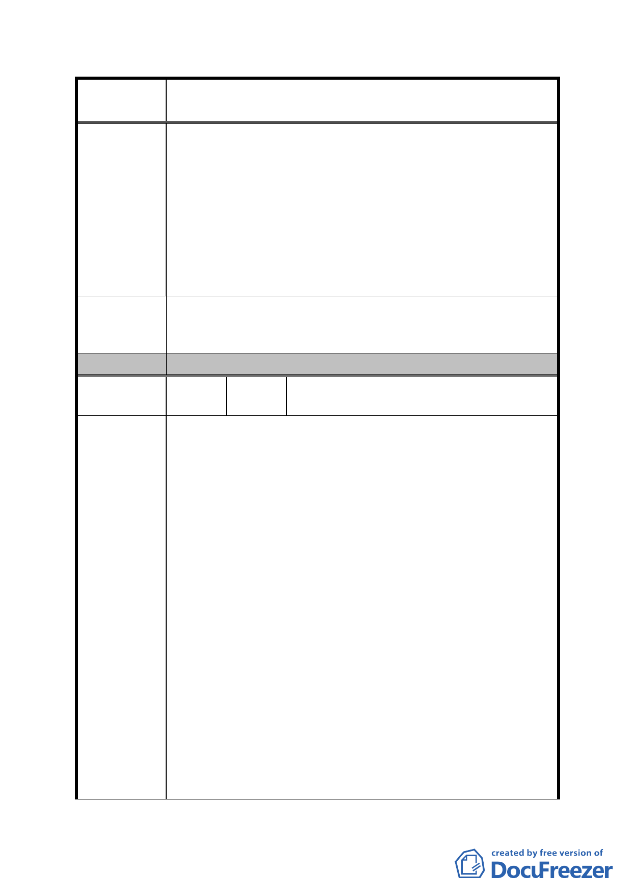

案
名
修訂臺北市「基隆河（中山橋至成美橋段）附近地區土地使
用分區與都市設計管制要點」（北段地區）計畫案
允許放寬商業區及娛樂區部份作為住宅使用，以符實
際。惟考量原始都市計畫目標，透過規定低層部商業使
用之最小建蔽率、最小容積率以型塑維持本區特有之商
業風貌，本法人深感認同。
二、查 97 年 1 月 30 日公展內容，基於上述之原因，除訂定
低層部最小建蔽率及容積率外，並降低本條空地比率由
原比例 55％降為 45％，以鼓勵增設商業使用面積。惟
98 年 5 月 19 日建議修正方案，又調回空地比例 55％，
政府通盤檢討修訂之基本原則反覆，令人無法理解。
基於維持本地區之正常發展，本法人建議仍維持 97 年 1 月
建 議 辦 法 30 日公展條文，空地比例為 45％，以鼓勵增設低層部之商
業活動。
委 員 會 決 議 同編號 1。
編
號
34
陳情人
王議員孝維 98.10.28/98.11.03
意見
口述
一、經本人查訪多處以往獲市府容積獎勵之開放空間案例，
多淪為私人所用，未來於審議「台北好好看」案件時應
更加審慎為宜。
二、「台北好好看」申請案件誘因太大，開發業者獲利極鉅，
大彎北段區域之容積獎勵、高度放寬、住宅開放等皆應
再做考慮。
三、原始大彎北段地區之容積調整係從5％、10％一點一點
談起，如今突然竄出「台北好好看」卻是一次給到50
陳情理由
％，其公平性讓人質疑。
四、個人建議大彎北段的細部計畫通盤檢討案應先審定，讓
未達0.5公頃的小地主皆獲利後，再進行「台北好好看」
等大型開發案的專案變更，屆時因公平性的拉近其阻力
相對就會減少。
五、有關「台北好好看」容積獎勵之泛散，若市府因此而獲
致相對之回饋足以弭平市府財政的話，個人尚表支持，
惟獎勵上限絕對不應超過基準容積之50％。
六、大彎北段地區之建築物高度就景觀條件而言不一定要
高，放寬為 90 公尺太高，個人建議放寬為 60 公尺為宜。
- 95 -